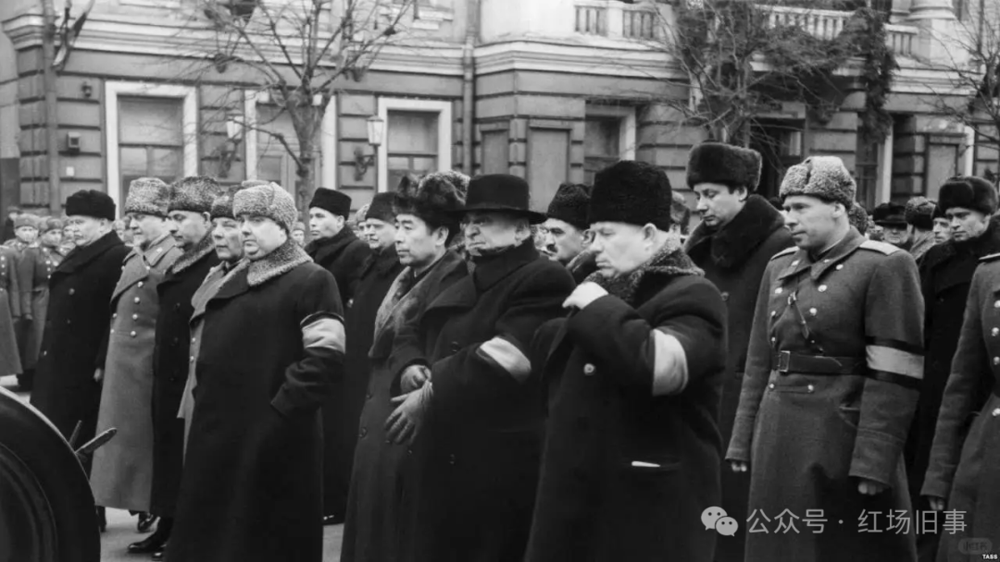
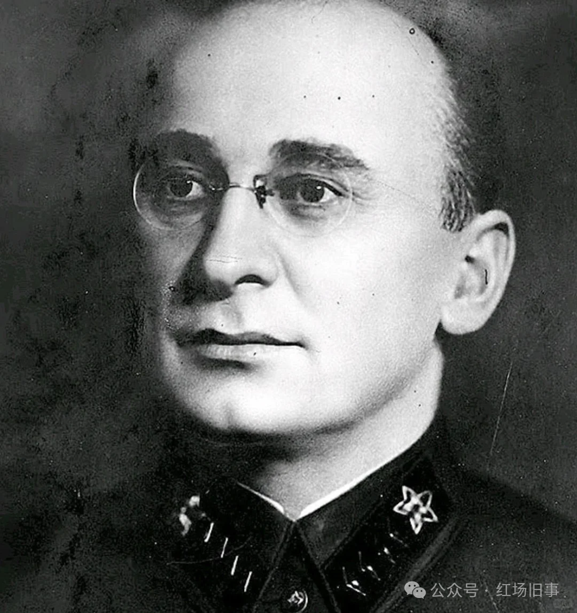
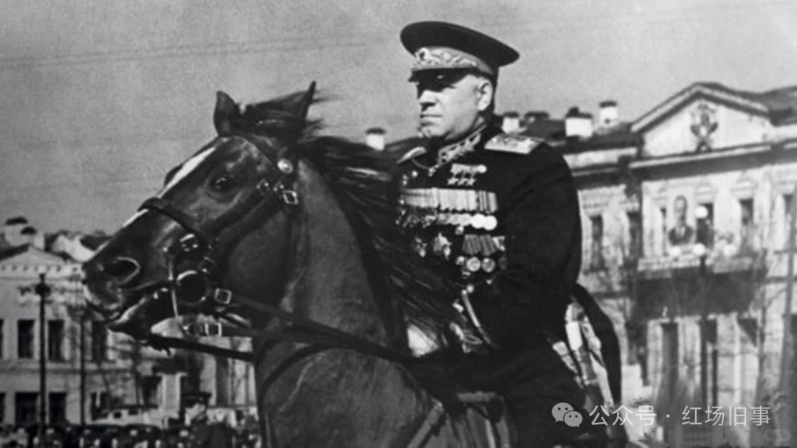
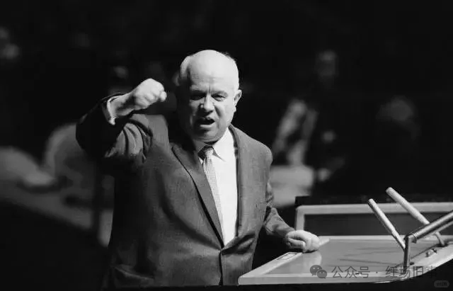

帝国瞬间失去“大脑”：斯大林死后那三个月，谁在真正掌权？
文字与图片版权归各自权利人所有。 查看公众号原文 ↗
1953年3月5日，孔策沃别墅斯大林倒在餐厅地板上，已经失去意识四天了。贝利亚冲进房间时推开医生，骂骂咧咧地喊：“站起来啊，老头子！”斯大林没有站起来。当晚9时50分，他停止了呼吸。午夜时分，播音员宣读公报：“斯大林同志的心脏停止了跳动。”整个苏联陷入震惊。但克里姆林宫里，没有人哭。权力真空出现了。谁来填补？
一、没有遗嘱的帝国斯大林统治苏联近三十年，却没有指定接班人。他不相信任何人，也不允许任何人拥有足以接班的名望。1952年十九大后，他把老战友们统统降职，莫洛托夫、米高扬等相继失宠。实际掌控权力的核心圈是：马林科夫、贝利亚、赫鲁晓夫、布尔加宁。加上莫洛托夫、伏罗希洛夫、卡冈诺维奇，构成接班游戏的玩家阵容。

自右向左依次为： 赫鲁晓夫、贝利亚、周恩来、马林科夫、伏罗希洛夫、卡刚诺维奇、布尔加宁、莫洛托夫。斯大林死前没有留下任何政治遗嘱。
二、最初的“三驾马车”斯大林还在与死神搏斗时，马林科夫已经开始草拟新领导名单。3月6日，任命公布：马林科夫：部长会议主席，兼苏共中央第一书记贝利亚：部长会议第一副主席，兼内务部长莫洛托夫：部长会议第一副主席，兼外交部长布尔加宁：部长会议第一副主席，兼国防部长伏罗希洛夫：最高苏维埃主席团主席赫鲁晓夫：中央主席团委员，没有政府职位表面是集体领导，实为马林科夫、贝利亚、莫洛托夫“三驾马车”。主席团排名：马林科夫、贝利亚、莫洛托夫、伏罗希洛夫、赫鲁晓夫……赫鲁晓夫只排第五。但赫鲁晓夫利用“集中精力于中央工作”的机会，3月14日促成马林科夫辞去书记处书记，自己当选书记处核心成员。党权开始向他转移。
三、贝利亚的百日改革斯大林死后头三个月，贝利亚是那个真正在做事的人。

拉夫连季·贝利亚他控制着内务部——“苏联东厂”，却发起了一系列惊人改革：平反冤案：重审“医生案”等，迅速为受害者平反，追究前国安机关伪造证据的罪行。大赦：劳改营和监狱关押着252万犯人。大赦令释放了约103万人回家。苏联历史上规模最大的一次释放。民族政策调整：提议各加盟共和国起用本地人，批评中央在乌克兰西部、波罗的海的错误。限制内务部权力：提议取消不经审判判刑的特别会议。外交新思维：主张民主德国放弃建设社会主义。经济调整：叫停超大型项目，资源转向农业。这些举措让同僚们恐慌了。贝利亚抢先公布平反消息，把功劳归于自己；他批评民族政策时，那些与大镇压有关的人——莫洛托夫、马林科夫、赫鲁晓夫——感到了致命威胁。他必须被除掉。
四、朱可夫带兵冲进会议室反贝利亚联盟的组织者是赫鲁晓夫。他逐个串连：先找布尔加宁——“贝利亚一旦上台，我们都会被玩死。”布尔加宁被说动。再找马林科夫——他已被贝利亚架空。又找莫洛托夫、伏罗希洛夫、卡冈诺维奇——他们对“东厂”的恐惧刻在骨子里。最关键的一步：争取军方。赫鲁晓夫通过布尔加宁联系上朱可夫元帅。朱可夫和贝利亚有旧仇。听到要搞贝利亚，朱可夫只说两个字：“干他。”

格奥尔吉·康斯坦丁诺维奇·朱可夫1953年6月26日，中央主席团会议。马林科夫主持会议。赫鲁晓夫率先发难，历数贝利亚罪行。贝利亚愣住，拉住赫鲁晓夫的手：“尼基塔，你在说什么？”赫鲁晓夫甩开他：“你马上就会明白！”马林科夫按动密铃。隔壁房间，朱可夫带领军人冲进会议室，大喝：“举起手来！”贝利亚伸手去拿公文包——被朱可夫一把按住。贝利亚被捕。
五、特务头子的结局贝利亚被关了半年。1953年12月23日，最高法院特别法庭判决：贝利亚犯有“叛卖祖国、组织反苏阴谋团伙”等罪行，判处死刑。枪决当晚执行。行刑地点在防空洞。贝利亚跪地求饶，喊着要见马林科夫、见赫鲁晓夫。没人理他。第一枪没打死，补了第二枪。尸体被扔进盛有强碱的容器焚毁，案卷中没有留下死亡记载。他的保险柜被立即打开，文件全部销毁。贝利亚死了。那些与他共事三十年的人——亲手杀了他。
六、赫鲁晓夫胜出贝利亚死后，“集体领导”的口号喊得更响。但所有人都知道：权力正在向一个人集中。1953年9月，赫鲁晓夫当选苏共中央第一书记。他控制了党机器。1955年2月，马林科夫被解除部长会议主席职务，由布尔加宁接任。1957年6月，莫洛托夫、马林科夫、卡冈诺维奇等人试图在主席团会议上罢免赫鲁晓夫，一度占多数。但赫鲁晓夫坚持召开中央全会，依靠军队和地方党委支持，把反对派打成“反党集团”。1958年3月，布尔加宁被解除总理职务，赫鲁晓夫亲自兼任部长会议主席。至此，赫鲁晓夫集党政大权于一身——斯大林之后，他是无可争议的第一人。

赫鲁晓夫起初最不起眼。他为什么赢了？第一，他掌握了党机器。从3月进入书记处，到9月当选第一书记，他控制了党的中央机构。在一党制国家，党权是最根本的权力。第二，他善于结盟。先联合马林科夫除掉贝利亚，再联合元老扳倒马林科夫，1957年面对元老围攻时，他通过召开中央全会绕开了人数劣势。第三，他有军队支持。逮捕贝利亚靠朱可夫，1957年反败为胜也靠朱可夫用军用飞机把中央委员运到莫斯科。枪杆子比选票有用。第四，对手都有致命弱点。贝利亚是人恐惧的“东厂头子”，马林科夫缺乏党内根基，莫洛托夫等人是旧时代遗老、没有班底。他们每个人都想当斯大林，但谁都当不了斯大林。
尾声：帝国换了主人，但没换模式五年里，斯大林的那些“亲密战友”——贝利亚、马林科夫、莫洛托夫、卡冈诺维奇、伏罗希洛夫、布尔加宁——一个一个从权力顶峰跌落。贝利亚死了，马林科夫去哈萨克水电站当站长，莫洛托夫去蒙古当大使……赫鲁晓夫站在了最高处。他接管的是一个没有斯大林的斯大林体制。依然高度集权，依然没有正常权力交接程序，依然靠党内斗争、秘密串联、动用军队来决定最高领导人。贝利亚死后，赫鲁晓夫对朱可夫说：“谢谢你。没有你，我们都会死。”朱可夫回答：“我只是做了军人该做的事。”两年后，赫鲁晓夫解除了朱可夫的国防部长职务。帝国的逻辑没有变：胜利者清除盟友，就像斯大林时代一样。只是这一次，失败者不再被枪毙——他们被流放、被降职、被遗忘。贝利亚是唯一的例外，因为他是“东厂一哥”，因为杀他的人需要用他的血来洗刷自己。1953年12月23日，贝利亚的尸体在强碱中化为一滩液体。那一刻，斯大林时代的最后一点残渣，似乎也被清除了。但清除一个人容易，清除一个时代很难。赫鲁晓夫很快就会发现：他坐在斯大林坐过的椅子上，面对斯大林留下的问题——他能走出一条不同的路吗？
那是下一期的故事了。